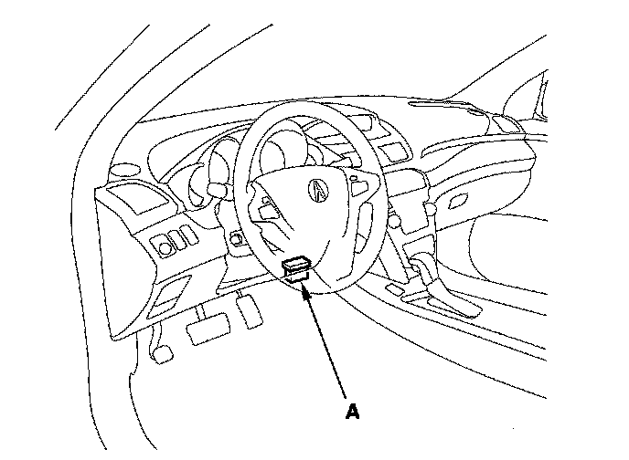

Yaw Rate-Lateral/Longitudinal Acceleration Neutral Position Memorization
Yaw Rate-Lateral/Longitudinal Acceleration Neutral Position MemorizationWhenever the yaw rate sensor or the lateral acceleration sensor is replaced, its neutral position memorization must be done.
1. With the ignition switch OFF, connect the HDS to the 16P DLC (A) behind the driver's dashboard lower cover.

2. Turn the ignition switch ON (II) go to the miscellaneous test menu/neutral menu/all sensor and follow the prompts on the HDS screen.
NOTE: See the HDS help menu for specific instructions.